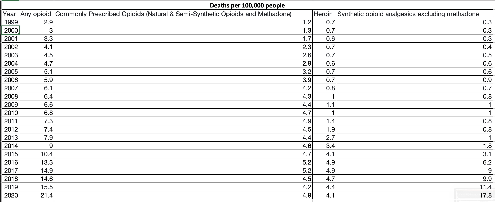
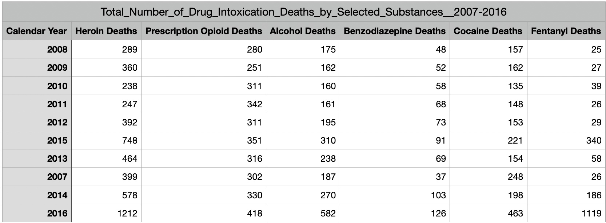

Over the past decade, the issue of drug overdoses has become an increasingly concerning and complex public health challenge. Tragically, the number of deaths resulting from overdoses has surged, reflecting a pervasive and multifaceted crisis. The opioid epidemic, in particular, has played a significant role in this alarming trend, with both prescription and illicit opioids contributing to a substantial portion of overdose fatalities. Despite efforts to address the crisis through enhanced awareness, education, and the implementation of harm reduction strategies, the numbers remain distressingly high. The societal impact of these losses is profound, affecting individuals, families, and communities across the globe. As policymakers, healthcare professionals, and advocacy groups continue to grapple with this epidemic, there is a pressing need for comprehensive and compassionate approaches that encompass prevention, treatment, and support for those affected by substance use disorders. Addressing the root causes of the overdose crisis requires a collective commitment to public health initiatives, destigmatization of addiction, and the fostering of accessible, evidence-based interventions.


Additional Considerations:
Hello! My name is Kenneth Szillus! I built a website to demonstrate the impact of opiods in America today! My inspiration behind this was my mother who is a Rehabilitation therapist and deals with patients suffering from addiction on a daily basis. I am currently a Graduate Student at the University of South Florida working to obtain my Master's in Business Analytics and Information systems. Previously, I received my MBA from the University of Louisiana at Lafayette. Right now I work as a Manager for Pfizer supporting the Robotics and Automation team where I specialize in Power BI, Automate, and soon Co-Pilot!